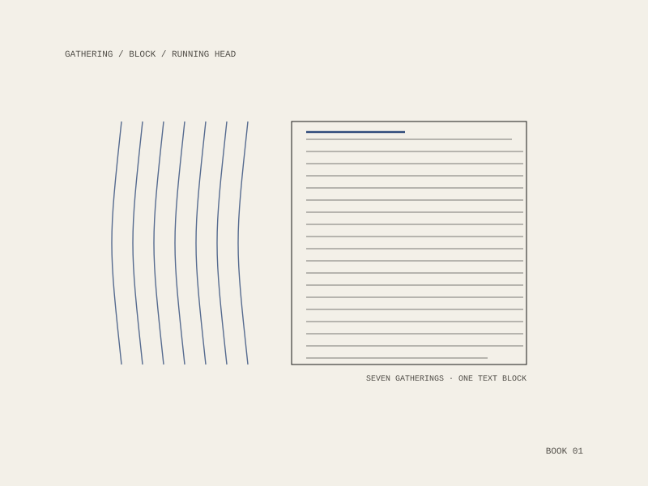

Emu Butch
A book-length work in prose, written and edited in the open — and the reason the manuscript tooling in this stack exists at all.

Supported by
A Banff Centre writers residency, 2026 — which is the part of a book’s life that decides whether it gets finished: time, and a room, and other writers in the building.
The book and its workbench
Palimpsest was built for this manuscript before it was built for anything else: a folder of numbered Markdown sections, a colour-coded reading copy, a parts board, a copyedit pass, a back-of-book index and the motifs named by hand. The tool is book-agnostic now, but the requirements came from one book.
That is the working method throughout: the writing and the instrument for the writing are made in the same pass, and each one keeps the other honest.